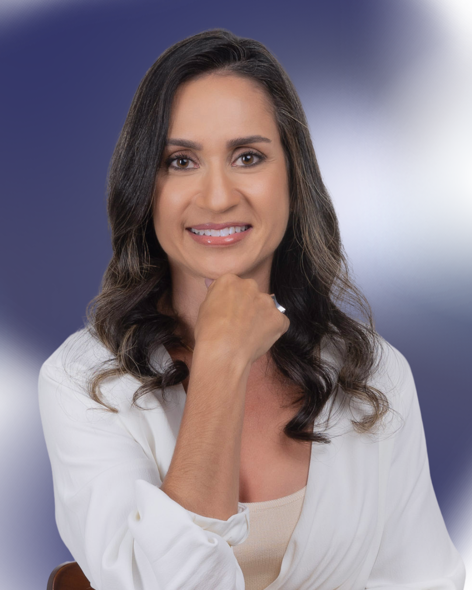
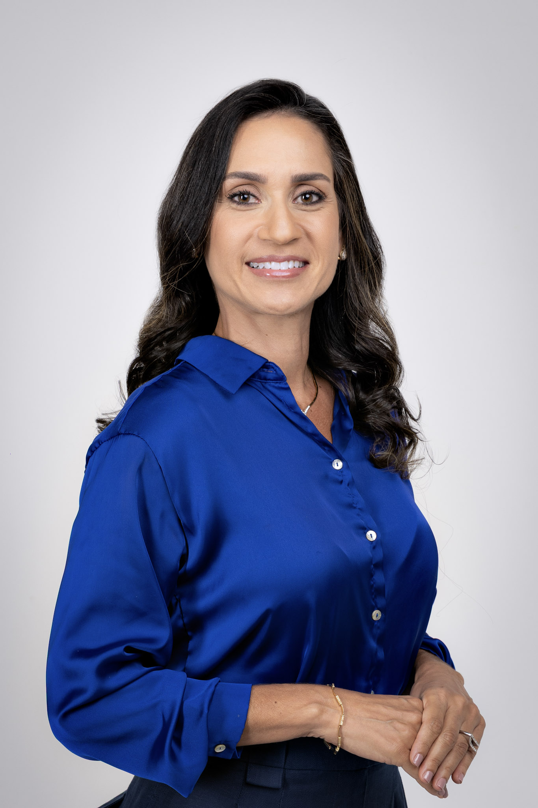
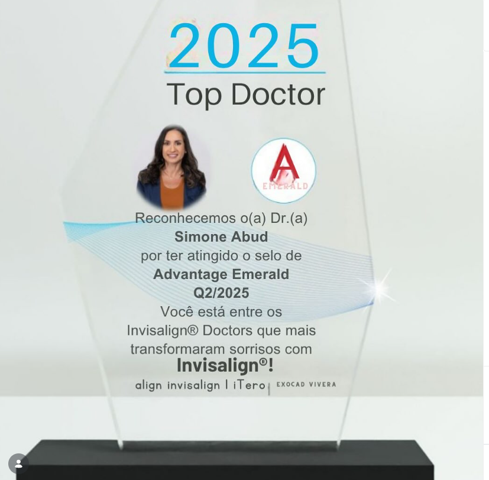

Sorria com confiança. Tratamentos de alto padrão com Alinhadores Invisíveis, Ortodontia Avançada e Ortopedia Facial dos Maxilares.

Excelência em reabilitação oral e alinhadores invisíveis para a saúde estética do seu sorriso.
O tratamento ortodôntico mais avançado, discreto e confortável do mundo. Corrija seu sorriso sem o uso de braquetes metálicos.
Correção funcional e estética do sorriso aliada à reabilitação para uma mordida perfeita e livre de dores faciais.
Abordagem preventiva focada no desenvolvimento ósseo e muscular da face, garantindo harmonia estética desde a fase de crescimento.

Especialista em Ortodontia focada na recuperação da saúde estética do sorriso e reabilitação oral.
Com mais de 20 anos de experiência clínica, a Dra. Simone Abud é referência nacional em ortodontia de alta complexidade. Reconhecida oficialmente como Top Doctor Invisalign, ela dedica sua carreira a proporcionar tratamentos inovadores, rápidos e extremamente confortáveis.
Dê o primeiro passo para o sorriso dos seus sonhos com uma especialista de confiança.
Agendar minha AvaliaçãoPremiada clinicamente por alcançar o selo Advantage Emerald 2025.

Mais entregas de Invisalign concluídas com absoluto sucesso e pacientes satisfeitos!
Acompanhe nosso trabalho e transformações incríveis de sorrisos diretamente no Instagram.
Esclareça suas dúvidas sobre nossos tratamentos de excelência.
A duração varia conforme a complexidade do caso, mas tratamentos com Invisalign tendem a ser mais rápidos que a ortodontia tradicional. Muitos casos são resolvidos entre 6 a 18 meses.
O Invisalign aplica uma força suave e controlada. É comum sentir uma leve pressão nos primeiros dias ao trocar a placa, sinal de que os dentes estão se movendo, mas é extremamente mais confortável que aparelhos fixos.
A avaliação pode ser feita a partir dos 5 ou 6 anos de idade. Quanto mais cedo detectarmos desequilíbrios ósseos ou musculares no desenvolvimento, mais eficaz e preventivo será o tratamento.
Sim! Uma das grandes vantagens dos alinhadores Invisalign é que eles são removíveis. Isso permite que você coma sem restrições e facilita a higienização completa dos dentes (escovação e fio dental) sem barreiras.
Venha recuperar o seu sorriso com excelência. Estamos em uma localização privilegiada em Salvador.
Agende agora sua avaliação e descubra o tratamento ideal para a saúde e estética da sua boca.
Falar via WhatsApp